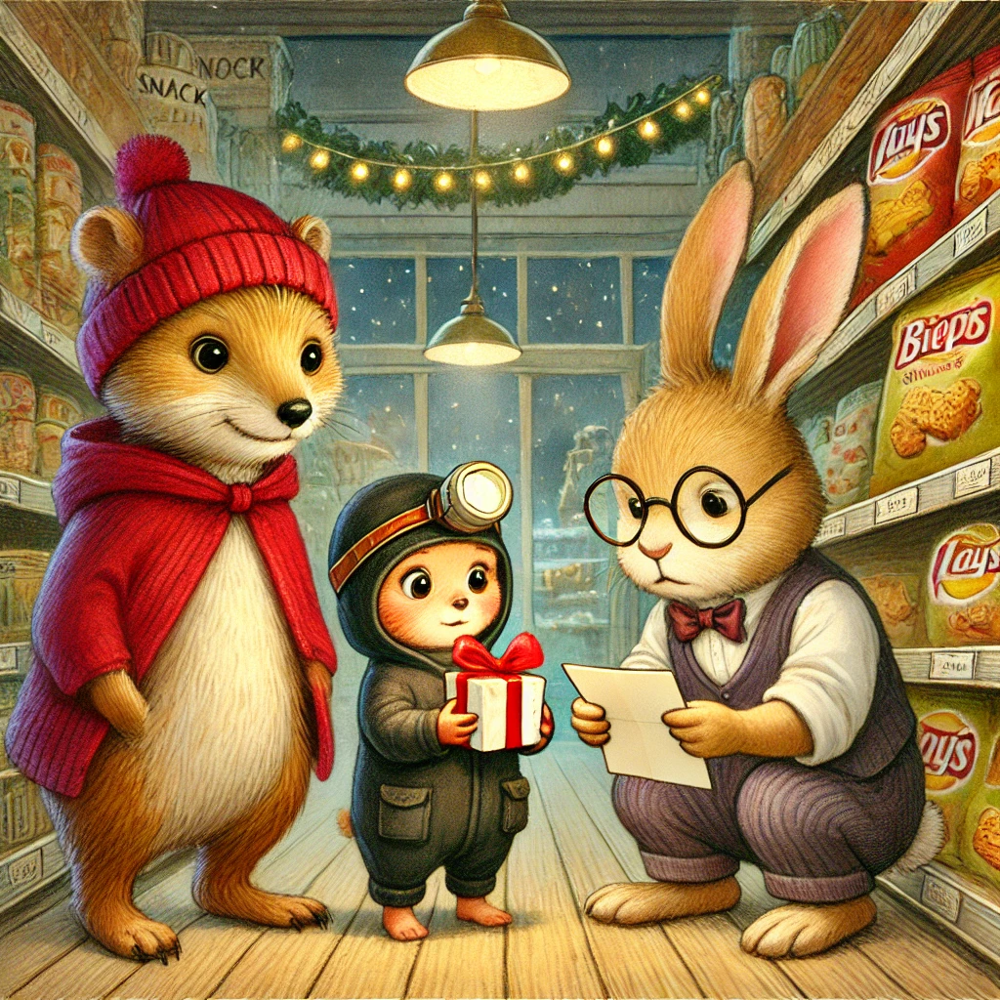
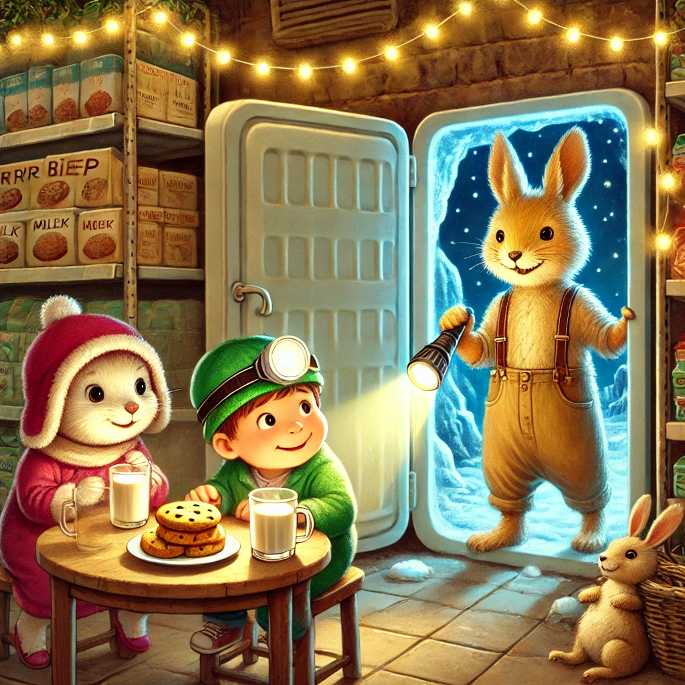
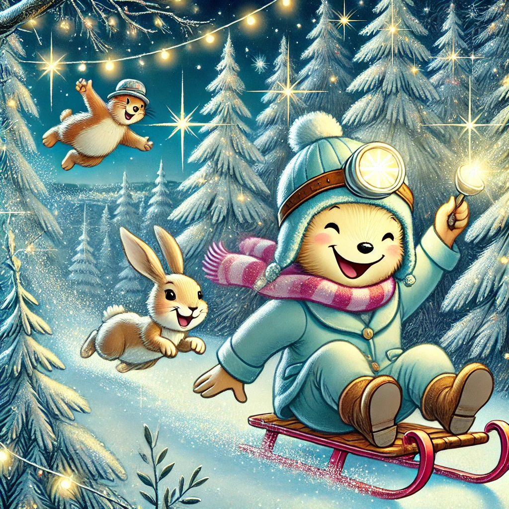

Es war einmal ein Wiesel namens Winnie, das oben auf dem Knabbereienregal eines Supermarkts in Leknes auf den Lofoten wohnte. Eines Tages wachte Winnie mit einem seltsamen Gefühl auf – ein leises Kitzeln in der Nase. Als sie sich umdrehte, sah sie, dass jemand in ihrer Knabber-Ecke ein winziges Geschenk mit einer roten Schleife hinterlassen hatte.
Neugierig schnupperte sie daran und schob vorsichtig die Schleife zur Seite. Im Inneren fand sie einen kleinen Zettel mit einer rätselhaften Nachricht: "Wenn du weißt, wie man Träume findet, dann komm zum Marmeladenregal." "Träume finden? Was für ein Unsinn!" murmelte Winnie, aber ihre Neugier war geweckt. Also kletterte sie runter und lief in Richtung Marmeladenabteilung, wobei sie Herrn Hase und Biep auf dem Weg auflas. "Ein Abenteuer?", fragte Herr Hase skeptisch, während Biep aufgeregt die rote Schleife untersuchte. "Wir kommen mit!"
Am Marmeladenregal angekommen, fanden die drei eine weitere Nachricht, die in einem Glas Aprikosenmarmelade steckte: "Hinter der Kühltruhe wartet das Abenteuer auf euch!" Die Kühltruhe? Das klang kalt und unbequem, aber Winnie, Biep und Herr Hase waren nun viel zu neugierig, um aufzuhören. Gemeinsam stapften sie los, wobei Biep mit seiner Stirnlampe mutig den Weg leuchtete. Hinter der Kühltruhe entdeckten sie eine kleine Höhle aus aufgestapelten Pappkartons, die jemand liebevoll dekoriert hatte. Glühwürmchen-Lichterketten hingen von der Decke, und in der Mitte stand ein kleiner Tisch, auf dem warme Milch und Plätzchen warteten.
"Willkommen in der Traumfabrik!", sagte eine sanfte Stimme, und aus den Schatten trat eine kleine Maus mit einem zauberhaften Hut. "Ich bin Madame Maus, und ich helfe allen, ihre Weihnachtsträume zu finden." "Wahnsinn!", staunte Winnie. "Kannst du mir einen Traum mit Chipsgeschmack zaubern?"
Madame Maus lächelte. "Träume sind nicht immer das, was wir erwarten, Winnie. Manchmal sind sie besser!" Mit einer eleganten Bewegung zauberte sie eine Wolke aus goldenem Staub, die sich um die drei Freunde legte. Plötzlich fanden sich Winnie, Biep und Herr Hase in einem schimmernden Winterwald wieder. Die Bäume glitzerten wie Zuckerstangen, und der Schnee schmeckte tatsächlich nach Chips. Sie rodelten auf magischen Schlitten, flogen über funkelnde Schneewiesen und lachten, bis ihnen die Bäuche wehtaten.
Als sie zurückkamen, war die Traumfabrik verschwunden. Doch Madame Maus hatte eine kleine Botschaft hinterlassen: "Die schönsten Träume sind die, die du mit deinen Freunden teilst." Winnie, Biep und Herr Hase saßen lange zusammen, tranken die Milch, teilten sich die Plätzchen und schmiedeten neue Pläne für ihr nächstes Abenteuer.